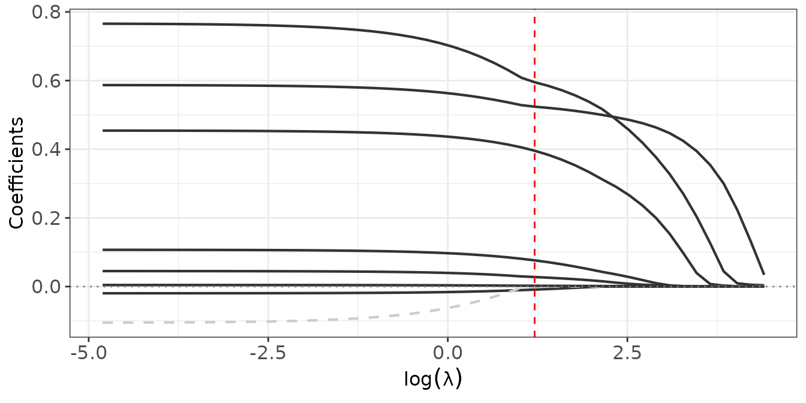
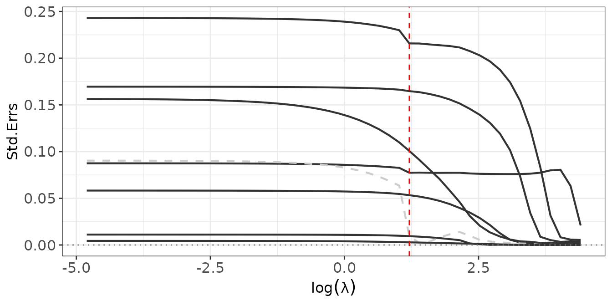
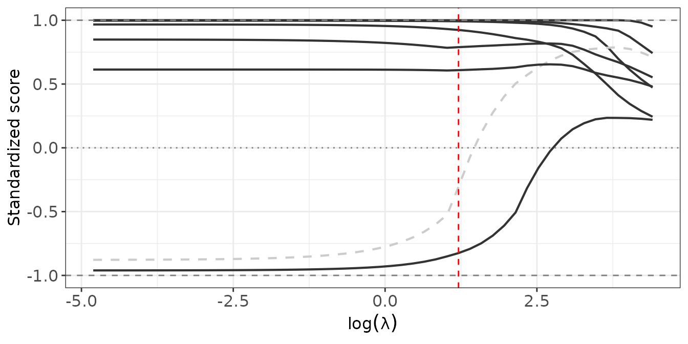

An Introduction to islasso
Gianluca Sottile
Giovanna Cilluffo
Vito M.R. Muggeo
November 25, 2026
Source:vignettes/islasso-intro.Rmd
islasso-intro.RmdAbstract
In this short note we present and briefly discuss the R package islasso dealing with regression models having a large number of covariates. Estimation is carried out by penalizing the coefficients via a quasi-lasso penalty, wherein the nonsmooth lasso penalty is replaced by its smooth counterpart determined iteratively by data according to the induced smoothing idea. The package includes functions to estimate the model and to test for linear hypothesis on linear combinations of relevant coefficients. We illustrate R code throughout a worked example, by avoiding intentionally to report details and extended bibliography.
Introduction
Let \mathbf{y} = \mathbf{X}\beta + \mathbf{\epsilon} be the linear model of interest with usual zero-means and homoscedastic errors. As usual, \mathbf{y} = (y_1,\ldots,y_n)^T is the response vector, \mathbf{X} is the n \times p design matrix (having p quite large) with regression coefficients \mathbf{\beta}. When interest lies in selecting the non-noise covariates and estimating the relevant effect, one assumes the lasso penalized objective function (Tibshirani, 1996), \frac{1}{2}||\mathbf{y}-\mathbf{X}\mathbf{\beta}||_2^2+\lambda||\mathbf{\beta}||_1
The R functions
The main function of the package are islasso() where the user supplies the model formula as in the usual lm or glm functions, i.e.
islasso(formula, family = gaussian, lambda, alpha = 1, data, weights, subset,
offset, unpenalized, contrasts = NULL, control = is.control())and islasso.path used to fit the regularization path via the induced smoothed lasso framework, i.e.
islasso.path(formula, family = gaussian, lambda = NULL, nlambda = 100,
lambda.min.ratio = ifelse(nobs < nvars, 1E-2, 1E-04), alpha = 1,
data, weights, subset, offset, unpenalized, contrasts = NULL, control = is.control())family accepts specification of family and link function as in Table 1, lambda is the tuning parameter, alpha is elastic-net mixing parameter, nlambda is the number of lambda values, lambda.min.ratio is the smallest value for lambda (as a fraction of lambda.max), and unpenalized allows to indicate covariates with unpenalized coefficients.
Table 1. Some families and link functions available in
islasso (from version 1.7.0 any family object accepted by
glm() can be used; see the vignette GLMs and
families)
| family | link |
|---|---|
| gaussian | identity |
| binomial, quasibinomial | logit, probit, cauchit, log, cloglog |
| poisson, quasipoisson | log, identity, sqrt |
| Gamma | inverse, identity, log |
| inverse.gaussian | 1/mu^2, inverse, identity, log |
MASS::negative.binomial(theta) |
log, sqrt, identity |
The fitter functions are and which read as
islasso.fit(X, y, family = gaussian(), lambda, alpha = 1, intercept = FALSE,
weights = NULL, offset = NULL, unpenalized = NULL, control = is.control()) and
islasso.path.fit(X, y, family = gaussian(), lambda, nlambda, lambda.min.ratio,
alpha = 1, intercept = FALSE, weights = NULL, offset = NULL,
unpenalized = NULL, control = is.control()) which actually implement the estimating algorithm as described in the paper. The lambda argument in islasso.fit and islasso specifies the positive tuning parameter in the penalized objective. Any non-negative value can be provided, but if missing, it is computed via K-fold cross validation by the function cv.glmnet() from package glmnet. The number of folds being used can be specified via the argument nfolds of the auxiliary function is.control(). The lambda argument in islasso.path.fit and islasso.path specifies the sequence of positive tuning parameters, user supplied or automatically computed based on nlambda and lambda.min.ratio.
A worked example: the Prostate data set
The Prostate dataset is a well-known benchmark in
regression analysis and variable selection, originally published by
Stamey et al. (1989). It contains clinical measurements from 97 male
patients diagnosed with prostate cancer.
The primary goal is to model the level of prostate-specific antigen (PSA) based on several predictive variables, including:
-
lcavol: log cancer volume
-
lweight: log prostate weight
-
age: patient’s age
-
lbph: log benign prostatic hyperplasia amount
-
svi: seminal vesicle invasion
-
lcp: log capsular penetration
-
gleason: Gleason score (histological grade of tumor)
-
pgg45: percent of Gleason scores 4 or 5
The response variable is lpsa, the logarithm of PSA
levels.
This dataset is particularly useful for testing due to its moderate size and the presence of multicollinearity among predictors.
To select the important terms in the regression equation we could simply apply the lasso using the R package glmnet
library(islasso)
data("Prostate", package = "islasso")
x <- model.matrix(lpsa ~ ., data = Prostate)[, -1]
y <- Prostate$lpsa
set.seed(1)
a1 <- glmnet::cv.glmnet(x, y, family = "gaussian")
n <- nrow(Prostate)
a1$lambda.min * n
#> [1] 7.283069
b <- drop(coef(a1, "lambda.min", exact = TRUE))
length(b[b != 0])
#> [1] 6Ten-fold cross-validation “selects” \lambda= 7.283. corresponding to 6 non null coefficients
names(b[b != 0])
#> NULLThe last three estimates are
tail(b[b != 0], n = 3)
#> [1] 0.042120029 0.543559468 0.001225954A reasonable question is if all the “selected” coefficients are significant in the model. Unfortunately lasso regression does not return standard errors due to nonsmoothness of objective, and some alternative approaches have been proposed., including the (Lockhart et al., 2013). Among the (few) strategies, including the ‘covariance test’, the ‘post-selection inference’ and the ‘(modified) residual bootstrap’, here we illustrate the R package islasso implementing the recent `quasi’ lasso approach based on the induced smoothing idea (Brown and Wang, 2005) as discussed in Cilluffo et al. (2020).
While the optimal lambda could be selected (without supplying any value to lambda), we use optimal value minimizing a specific criterion chosen between AIC, BIC, AICc, eBIC, GCV or GIC. From version 1.4.0 of the R package islasso optimal strategy is to built the regularization path
out <- islasso.path(lpsa ~ ., data = Prostate, nlambda = 50L, family = gaussian())
out
#>
#> Call:
#> islasso.path(formula = lpsa ~ ., family = gaussian(), nlambda = 50L,
#> data = Prostate)
#>
#> Coefficients:
#> lambda df phi deviance logLik
#> 1 0.0082 8.9982 0.5018 44.1631 -99.4762
#> 2 0.0099 8.9978 0.5018 44.1631 -99.4763
#> 3 0.0119 8.9973 0.5018 44.1632 -99.4763
#> 4 0.0144 8.9968 0.5018 44.1632 -99.4763
#> 5 0.0174 8.9961 0.5018 44.1632 -99.4763
#> 6 0.0209 8.9953 0.5018 44.1632 -99.4763
#> 7 0.0253 8.9943 0.5018 44.1632 -99.4764
#> 8 0.0305 8.9931 0.5018 44.1633 -99.4764
#> 9 0.0368 8.9916 0.5018 44.1634 -99.4765
#> 10 0.0444 8.9899 0.5018 44.1635 -99.4766
#> 11 0.0536 8.9878 0.5018 44.1637 -99.4768
#> 12 0.0647 8.9852 0.5018 44.1639 -99.4771
#> 13 0.0781 8.9821 0.5018 44.1643 -99.4775
#> 14 0.0942 8.9784 0.5017 44.1648 -99.4780
#> 15 0.1137 8.9738 0.5017 44.1655 -99.4789
#> 16 0.1372 8.9682 0.5017 44.1666 -99.4800
#> 17 0.1656 8.9615 0.5017 44.1682 -99.4818
#> 18 0.1998 8.9532 0.5017 44.1705 -99.4843
#> 19 0.2411 8.9431 0.5017 44.1738 -99.4879
#> 20 0.2910 8.9306 0.5016 44.1786 -99.4932
#> 21 0.3511 8.9153 0.5016 44.1855 -99.5008
#> 22 0.4237 8.8965 0.5016 44.1955 -99.5118
#> 23 0.5114 8.8731 0.5017 44.2099 -99.5275
#> 24 0.6171 8.8439 0.5017 44.2306 -99.5502
#> 25 0.7447 8.8075 0.5019 44.2601 -99.5827
#> 26 0.8987 8.7618 0.5021 44.3023 -99.6288
#> 27 1.0846 8.7042 0.5024 44.3619 -99.6940
#> 28 1.3089 8.6312 0.5030 44.4456 -99.7855
#> 29 1.5796 8.5389 0.5037 44.5618 -99.9121
#> 30 1.9062 8.4226 0.5049 44.7207 -100.0848
#> 31 2.3004 8.2770 0.5065 44.9338 -100.3153
#> 32 2.7761 8.0994 0.5086 45.2124 -100.6151
#> 33 3.3502 7.3572 0.5069 45.4441 -100.8630
#> 34 4.0429 7.1029 0.5083 45.6969 -101.1321
#> 35 4.8790 6.9028 0.5110 46.0441 -101.4992
#> 36 5.8879 6.6977 0.5150 46.5098 -101.9872
#> 37 7.1055 6.4217 0.5202 47.1203 -102.6197
#> 38 8.5749 6.0975 0.5269 47.8939 -103.4095
#> 39 10.3481 5.4535 0.5322 48.7192 -104.2381
#> 40 12.4880 5.0093 0.5419 49.8504 -105.3514
#> 41 15.0704 4.5590 0.5566 51.4513 -106.8844
#> 42 18.1869 4.1197 0.5780 53.6819 -108.9428
#> 43 21.9478 3.6515 0.6070 56.6602 -111.5615
#> 44 26.4864 3.2212 0.6459 60.5682 -114.7964
#> 45 31.9636 2.7885 0.6983 65.7891 -118.8066
#> 46 38.5735 2.4083 0.7638 72.2524 -123.3516
#> 47 46.5502 2.1679 0.8486 80.4752 -128.5791
#> 48 56.1764 2.0042 0.9587 91.0767 -134.5811
#> 49 67.7933 1.7450 1.0967 104.4704 -141.2354
#> 50 81.8125 1.2582 1.2654 121.1522 -148.4204and then to choose the best tuning parameter through the one of the criteria listed above using the function GoF.islasso.path, e.g.,
lmb.best <- GoF.islasso.path(out, plot = FALSE)
lmb.best$lambda.min
#> AIC BIC AICc eBIC GCV GIC
#> 3.350151 10.348092 4.042937 12.488001 4.042937 4.042937The regularization path is also very useful to have more insights about coefficients, standard errors and gradient profile
plot(out, yvar = "coefficients", gof = "AIC")
plot(out, yvar = "se", gof = "AIC")
plot(out, yvar = "gradient", gof = "AIC")
Once selected the best lambda value minimizing for example the AIC criterion, the last step of the strategy consists on fitting a new islasso model.
lambda.aic <- lmb.best$lambda.min["AIC"]
out2 <- islasso(lpsa ~ ., data = Prostate, lambda = lambda.aic, family = gaussian())
out2
#>
#> Call:
#> islasso(formula = lpsa ~ ., family = gaussian(), lambda = lambda.aic,
#> data = Prostate)
#>
#> Coefficients:
#> (Intercept) lcavol lweight age lbph svi
#> 0.510792 0.523953 0.395643 -0.008836 0.076335 0.595210
#> lcp gleason pgg45
#> 0.000000 0.027789 0.002267
#>
#> Degrees of Freedom: 96 Total (i.e. Null); 89.64 Residual
#> Null Deviance: 127.9
#> Residual Deviance: 45.44
#> AIC: 218.4
#> Lambda: 3.35The summary method quickly returns the main output of the fitted model, including point estimates, standard errors and p-values. Visualizing estimates for all covariates could be somewhat inconvenient, especially when the number of covariates is large, thus we decide to print estimates only if the pvalue is less than a threshold value. We use 0.10
summary(out2, pval = 0.10)
#>
#> Call:
#> islasso(formula = lpsa ~ ., family = gaussian(), lambda = lambda.aic,
#> data = Prostate)
#>
#> Residuals:
#> Min 1Q Median 3Q Max
#> -1.68057 -0.38381 0.00979 0.39264 1.51820
#>
#> Estimate Std. Error Df z value Pr(>|z|)
#> (Intercept) 0.51079 0.99818 1.000 0.512 0.60884
#> lcavol 0.52395 0.07733 1.000 6.775 1.24e-11 ***
#> lweight 0.39564 0.16474 0.988 2.402 0.01632 *
#> svi 0.59521 0.21581 0.994 2.758 0.00582 **
#> ---
#> Signif. codes: 0 '***' 0.001 '**' 0.01 '*' 0.05 '.' 0.1 ' ' 1
#>
#> (Dispersion parameter for gaussian family taken to be 0.5069469)
#>
#> Null deviance: 127.918 on 96.00 degrees of freedom
#> Residual deviance: 45.444 on 89.64 degrees of freedom
#> AIC: 218.44
#> Lambda: 3.3502
#>
#> Number of IS iterations: 34In addition to the usual information printed by the summary method, the output also includes the column Df representing the degrees of freedom of each coefficient. Their sum is used to quantify the model complexity
sum(out2$internal$hi)
#> [1] 7.357227and the corresponding residual degrees of freedom (89.64) as reported
above. The Wald test (column z value) and p-values can be used to assess important or
significant covariates. Results suggest that variables
lcavol, lweight and svi are
informative to predict the measure of the logarithm of PSA levels, while
lbph is borderline informative. Just to be clear, another
way to obtain a similar result without computing the regularization
path, is to use the function aic.islasso which requires a
preliminary islasso fit object and a specification of the criterion to
be used. Hence
lambda.aic2 <- aic.islasso(out2, method = "AIC", interval = c(.1, 50), trace = FALSE)
out3 <- update(out2, lambda = lambda.aic2)
summary(out3, pval = .10)
#>
#> Call:
#> islasso(formula = lpsa ~ ., family = gaussian(), lambda = lambda.aic2,
#> data = Prostate)
#>
#> Residuals:
#> Min 1Q Median 3Q Max
#> -1.67474 -0.38070 0.00746 0.38965 1.52421
#>
#> Estimate Std. Error Df z value Pr(>|z|)
#> (Intercept) 0.50016 0.98317 1.000 0.509 0.6109
#> lcavol 0.52294 0.07743 1.000 6.754 1.44e-11 ***
#> lweight 0.39215 0.16450 0.986 2.384 0.0171 *
#> svi 0.59212 0.21590 0.994 2.743 0.0061 **
#> ---
#> Signif. codes: 0 '***' 0.001 '**' 0.01 '*' 0.05 '.' 0.1 ' ' 1
#>
#> (Dispersion parameter for gaussian family taken to be 0.5072506)
#>
#> Null deviance: 127.918 on 96.00 degrees of freedom
#> Residual deviance: 45.514 on 89.73 degrees of freedom
#> AIC: 218.42
#> Lambda: 3.5527
#>
#> Number of IS iterations: 39Comparisons between methods to select the tuning parameter and further discussions are out of the scope of this short note. We conclude this note by emphasizing that islasso also accepts the so-called elastic-net penalty, such that \frac{1}{2}||\mathbf{y}- \mathbf{X\beta}||_2^{2}+\lambda \{ \alpha ||\mathbf{\beta} ||^{}_1 + \frac{1}{2}(1-\alpha) ||\mathbf{\beta} ||^{2}_2 \} where 0\le \alpha\le 1 is the mixing parameter to be specified in islasso() and islasso.path() via the argument alpha, e.g.
# update the islasso path to fit an elastic-net model
out4 <- update(out, alpha = .5)
out4
#>
#> Call:
#> islasso.path(formula = lpsa ~ ., family = gaussian(), nlambda = 50L,
#> alpha = 0.5, data = Prostate)
#>
#> Coefficients:
#> lambda df phi deviance logLik
#> 1 0.0164 8.9968 0.5018 44.1631 -99.4763
#> 2 0.0197 8.9961 0.5018 44.1632 -99.4763
#> 3 0.0238 8.9953 0.5018 44.1632 -99.4763
#> 4 0.0288 8.9943 0.5018 44.1632 -99.4763
#> 5 0.0347 8.9931 0.5018 44.1632 -99.4763
#> 6 0.0419 8.9917 0.5018 44.1633 -99.4764
#> 7 0.0505 8.9900 0.5018 44.1633 -99.4764
#> 8 0.0610 8.9879 0.5018 44.1634 -99.4765
#> 9 0.0736 8.9854 0.5018 44.1635 -99.4767
#> 10 0.0888 8.9823 0.5018 44.1637 -99.4769
#> 11 0.1072 8.9786 0.5017 44.1640 -99.4772
#> 12 0.1294 8.9742 0.5017 44.1644 -99.4776
#> 13 0.1561 8.9688 0.5017 44.1650 -99.4782
#> 14 0.1884 8.9623 0.5017 44.1658 -99.4791
#> 15 0.2274 8.9544 0.5016 44.1670 -99.4805
#> 16 0.2744 8.9449 0.5016 44.1687 -99.4824
#> 17 0.3311 8.9333 0.5016 44.1712 -99.4851
#> 18 0.3996 8.9193 0.5015 44.1749 -99.4891
#> 19 0.4822 8.9023 0.5015 44.1801 -99.4949
#> 20 0.5819 8.8815 0.5015 44.1877 -99.5032
#> 21 0.7023 8.8563 0.5014 44.1985 -99.5151
#> 22 0.8475 8.8255 0.5014 44.2141 -99.5322
#> 23 1.0227 8.7879 0.5015 44.2363 -99.5566
#> 24 1.2342 8.7418 0.5016 44.2679 -99.5912
#> 25 1.4895 8.6854 0.5018 44.3125 -99.6400
#> 26 1.7975 8.6161 0.5021 44.3750 -99.7083
#> 27 2.1692 8.5310 0.5026 44.4618 -99.8031
#> 28 2.6178 8.4267 0.5033 44.5810 -99.9329
#> 29 3.1591 8.2994 0.5044 44.7421 -100.1079
#> 30 3.8124 8.1455 0.5059 44.9559 -100.3391
#> 31 4.6008 7.9631 0.5080 45.2335 -100.6376
#> 32 5.5522 7.2061 0.5062 45.4569 -100.8767
#> 33 6.7003 6.9521 0.5076 45.7119 -101.1480
#> 34 8.0859 6.8306 0.5108 46.0614 -101.5174
#> 35 9.7580 6.6454 0.5150 46.5336 -102.0121
#> 36 11.7759 6.5531 0.5219 47.2070 -102.7089
#> 37 14.2110 6.1580 0.5292 48.0703 -103.5878
#> 38 17.1497 5.5519 0.5363 49.0426 -104.5590
#> 39 20.6962 5.1579 0.5470 50.2331 -105.7222
#> 40 24.9760 4.7561 0.5624 51.8773 -107.2843
#> 41 30.1409 4.3973 0.5846 54.1372 -109.3524
#> 42 36.3738 3.9978 0.6150 57.1960 -112.0180
#> 43 43.8956 3.5509 0.6551 61.2213 -115.3166
#> 44 52.9729 3.1104 0.7074 66.4174 -119.2676
#> 45 63.9273 2.6860 0.7746 73.0565 -123.8884
#> 46 77.1470 2.2847 0.8573 81.2016 -129.0149
#> 47 93.1004 2.0006 0.9545 90.6759 -134.3672
#> 48 112.3529 1.7290 1.0693 101.8750 -140.0153
#> 49 135.5866 1.4590 1.1842 113.1390 -145.1015
#> 50 163.6249 1.1610 1.2929 123.9138 -149.5135
# select the best tuning parameter
lmb.best2 <- GoF.islasso.path(out4, plot = FALSE)
lmb.best2$lambda.min
#> AIC BIC AICc eBIC GCV GIC
#> 5.552156 6.700302 6.700302 20.696184 6.700302 6.700302
# fit a new islasso model with elastic-net penalty
lambda.aic3 <- lmb.best2$lambda.min["AIC"]
out5 <- update(out2, alpha = .5, lambda = lambda.aic3)
summary(out5, pval = .10)
#>
#> Call:
#> islasso(formula = lpsa ~ ., family = gaussian(), lambda = lambda.aic3,
#> alpha = 0.5, data = Prostate)
#>
#> Residuals:
#> Min 1Q Median 3Q Max
#> -1.67591 -0.37692 0.02177 0.39139 1.53096
#>
#> Estimate Std. Error Df z value Pr(>|z|)
#> (Intercept) 0.47616 0.98734 1.000 0.482 0.62961
#> lcavol 0.50862 0.07346 0.955 6.924 4.39e-12 ***
#> lweight 0.40181 0.15898 0.956 2.527 0.01149 *
#> svi 0.60711 0.20552 0.954 2.954 0.00314 **
#> ---
#> Signif. codes: 0 '***' 0.001 '**' 0.01 '*' 0.05 '.' 0.1 ' ' 1
#>
#> (Dispersion parameter for gaussian family taken to be 0.5062361)
#>
#> Null deviance: 127.918 on 96.00 degrees of freedom
#> Residual deviance: 45.457 on 89.79 degrees of freedom
#> AIC: 218.17
#> Lambda: 5.5522
#>
#> Number of IS iterations: 37
# or select the best tuning parameter using AIC with an islasso object
lambda.aic4 <- aic.islasso(out5, method = "AIC", interval = c(.1, 100), trace = FALSE)
out6 <- update(out5, lambda = lambda.aic4)
summary(out6, pval = .10)
#>
#> Call:
#> islasso(formula = lpsa ~ ., family = gaussian(), lambda = lambda.aic4,
#> alpha = 0.5, data = Prostate)
#>
#> Residuals:
#> Min 1Q Median 3Q Max
#> -1.66090 -0.38508 0.00922 0.38634 1.54766
#>
#> Estimate Std. Error Df z value Pr(>|z|)
#> (Intercept) 0.44806 0.95112 1.000 0.471 0.63758
#> lcavol 0.50401 0.07301 0.950 6.903 5.09e-12 ***
#> lweight 0.39406 0.15756 0.949 2.501 0.01238 *
#> svi 0.60112 0.20409 0.949 2.945 0.00323 **
#> ---
#> Signif. codes: 0 '***' 0.001 '**' 0.01 '*' 0.05 '.' 0.1 ' ' 1
#>
#> (Dispersion parameter for gaussian family taken to be 0.507113)
#>
#> Null deviance: 127.92 on 96 degrees of freedom
#> Residual deviance: 45.64 on 90 degrees of freedom
#> AIC: 218.14
#> Lambda: 6.3929
#>
#> Number of IS iterations: 70References
- Tibshirani R. Regression shrinkage and selection via the lasso. J R Stat Soc: Series B 1996; 58: 267–288
- Cilluffo, G, Sottile, G, La Grutta, S and Muggeo, VMR (2020) The Induced Smoothed lasso: A practical framework for hypothesis testing in high dimensional regression. Statistical Methods in Medical Research 29(3): 765–777. doi: 10.1177/0962280219842890.
- Brown B and Wang Y. Standard errors and covariance matrices for smoothed rank estimators. Biometrika 2005; 92: 149–158.